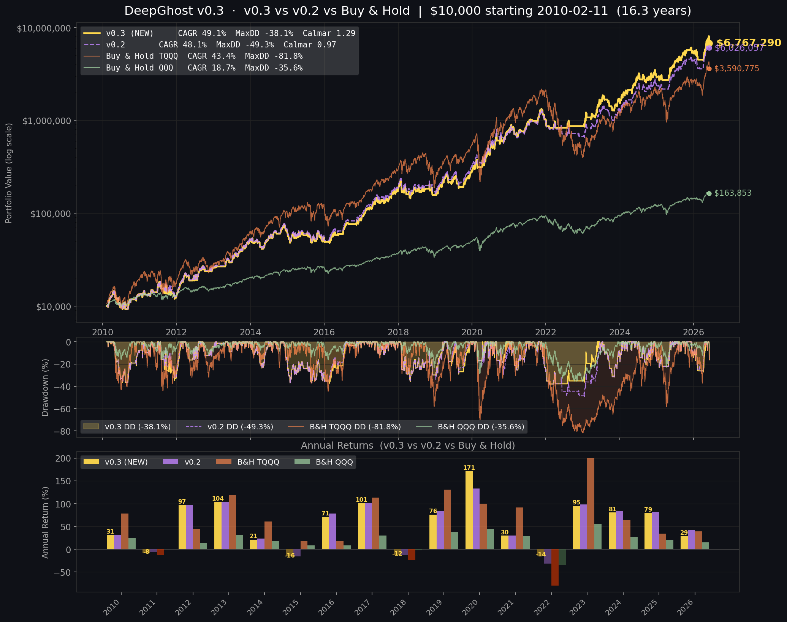
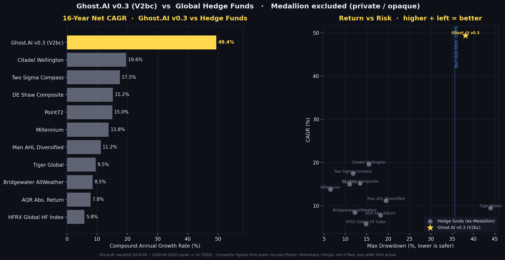
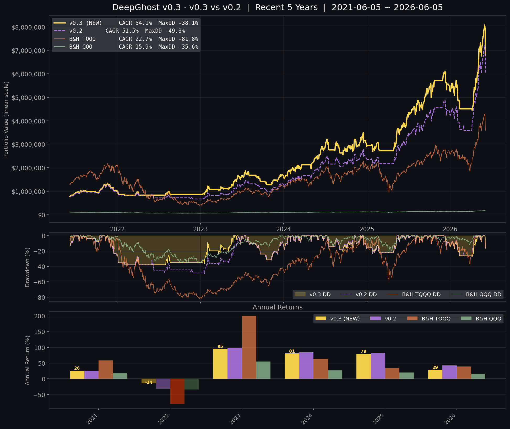
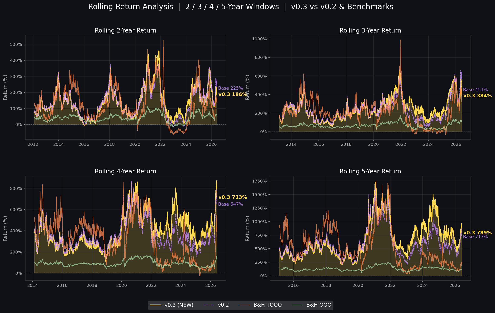

이보다 더 나은 퀀트 전략은 없습니다.
16년 백테스트에서 수익률은 3배 레버리지 TQQQ를 능가하고, 위험(최대 낙폭)은 무(無)레버리지 QQQ 수준으로 낮췄습니다.
Ghost.AI — Quantitative AI Investment
AI가 읽는 시장, 숫자로 증명하는 투자

왜 "V0.3"인가
지금까지 블로그에서 운영해 온 전략(이하 v0.2 Baseline)은 이미 충분히 강력했습니다. 16년간 TQQQ를 매매하며 단순 보유 대비 더 높은 수익과 더 낮은 낙폭을 보여줬습니다.
하지만 한 가지 약점이 있었습니다. 최대 낙폭(MDD) −49.3%. 좋은 숫자였지만, 1만 달러가 한때 5천 달러까지 줄어드는 구간을 견뎌야 한다는 뜻이었습니다.
DeepGhost v0.3은 바로 이 지점을 해결했습니다. 추세 인식 진입 + V자 반등 포착 + 하락장 강제 청산을 결합한 새 신호 체계로,
- 수익률은 오히려 더 끌어올리면서 (CAGR 48.1% → 49.4%)
- 최대 낙폭을 −49.3% → −38.1%로 11%p 줄였습니다.
그 결과가 이번 주말특별호의 한 줄 요약입니다.
💡 한 줄 요약
수익은 3배 레버리지 TQQQ를 능가, 위험은 무레버리지 QQQ 수준.
수익과 안전, 두 마리 토끼를 동시에 잡은 최초의 버전입니다.
16년 백테스트 성과 (2010년 2월 ~ 2026년 6월)
핵심 지표 — v0.3 vs 벤치마크
| 지표 | Ghost v0.3 | B&H TQQQ | B&H QQQ | (참고) v0.2 Baseline |
|---|---|---|---|---|
| CAGR | 49.4% | 43.4% | 18.7% | 48.1% |
| 최대 낙폭 (MDD) | −38.1% | −81.8% | −35.6% | −49.3% |
| 최종 자산 | $6,767,290 | $3,590,775 | $163,853 | $6,016,158 |
| Calmar Ratio | 1.29 | 0.53 | 0.53 | 0.97 |
| Sharpe Ratio | 1.28 | 0.62 | 0.85 | 1.24 |
초기 투자금 $10,000 기준 · QQQ 시그널 → TQQQ 매매
두 개의 숫자에 주목해 주세요.
- 수익(최종 자산): $6,767,290 — 3배 레버리지 TQQQ를 그냥 들고 있었을 때($3,590,775)보다 +$3,176,515 더 많습니다. 거의 2배입니다.
- 위험(MDD): −38.1% — 레버리지 없는 일반 QQQ의 낙폭(−35.6%)과 거의 같은 수준입니다.
3배 레버리지의 수익을 가져가면서, 위험은 레버리지가 없는 지수만큼 낮다 — 이것이 v0.3의 정체성입니다.
v0.3는 v0.2보다 무엇이 나아졌나
| 항목 | v0.2 Baseline | v0.3 (V2bc) | 개선 |
|---|---|---|---|
| 최대 낙폭 | −49.3% | −38.1% | 11.2%p ↓ |
| CAGR | 48.1% | 49.4% | +1.3%p ↑ |
| Calmar (수익/낙폭) | 0.97 | 1.29 | +33% |
특히 하락장 방어와 V자 반등 포착에서 차이가 났습니다.
- 2020 COVID 쇼크: v0.3 +171% (v0.2 +133%) — 폭락 후 반등 가속을 더 빨리 감지
- 2022 금리 충격: v0.3 −14% (v0.2 −32%) — 하락 구간 진입을 회피, 손실 절반
- 2011 신용등급 강등 V자: 빠른 반등을 v0.2보다 빠르게 재진입
헤지펀드와의 비교 (CAGR · MDD)
여기서부터가 이번 특별호의 핵심입니다. "TQQQ보다 낫다"는 건 알겠는데, 그래서 세계 최고의 헤지펀드들과 비교하면 어느 수준인가?
아래는 공개 자료(Preqin·Bloomberg·공시)로 추정한 글로벌 헤지펀드들의 순(net) 복리수익률(CAGR)과 최대 낙폭(MDD)입니다.
🚫 메달리온(Renaissance Medallion)은 비교에서 제외했습니다.
1993년 이후 외부 투자자를 받지 않는 완전 비공개 펀드로, 실제 운용 방식·수익 구조가 검증 불가능합니다.

복리수익률(CAGR) · 최대낙폭(MDD) 비교표
| 순위 | 전략 / 펀드 | CAGR | 최대 낙폭 | $10,000 → 16.3년 후* | 접근성 |
|---|---|---|---|---|---|
| ★ | Ghost.AI v0.3 | 49.4% | −38.1% | $6,767,290 | 현재 무료 |
| 2 | Citadel Wellington | 19.6% | −15.5% | ~$185,000 | 최소 $10M, 제한적 |
| 3 | Two Sigma Compass | 17.5% | −11.8% | ~$133,000 | 최소 $5M |
| 4 | DE Shaw Composite | 15.2% | −13.4% | ~$96,000 | 최소 $20M |
| 5 | Point72 | 15.0% | −11.0% | ~$93,000 | 최소 $5M |
| 6 | Millennium | 13.8% | −6.5% | ~$82,000 | 최소 $1M |
| 7 | Man AHL | 11.2% | −19.5% | ~$55,000 | 최소 $1M |
| 8 | Tiger Global | 9.5% | −44.0% | ~$43,000 | 2022년 −50%+ |
| 9 | Bridgewater All Weather | 8.5% | −12.2% | ~$37,000 | 최소 $100M |
| 10 | AQR Abs. Return | 7.8% | −18.2% | ~$33,000 | 최소 $5M |
| 11 | HFRX 헤지펀드 평균 | 5.8% | −14.8% | ~$25,000 | 업계 평균 |
* 각 펀드의 보고된 CAGR을 동일하게 16.3년 적용했을 때의 예시적 복리 결과입니다 (실제 펀드의 운용 기간·수익과 다름).
이 표가 말하는 것
-
복리수익률(CAGR)에서 압도적 1위. v0.3의 49.4%는 접근 가능한 최고 헤지펀드(Citadel 19.6%)의 약 2.5배입니다. 같은 1만 달러가 Ghost에서는 $6.77M, 시티델급 19.6%에서는 약 $185K — 36배 이상의 격차입니다.
-
위험(MDD)도 "감당 가능한 범위". 멀티전략 펀드들(−6~16%)보다는 낙폭이 깊지만, 이는 주식·레버리지 전략의 본질입니다. 그럼에도 v0.3의 −38.1%는 고수익을 노리는 롱숏 펀드(Tiger Global −44%)보다 낮고, 무엇보다 일반 QQQ 지수(−35.6%)와 사실상 같은 수준입니다.
-
접근성이 다릅니다. 위 헤지펀드들은 최소 가입금이 $1M ~ $100M이고 대부분 제한적/폐쇄적입니다. 반면 Ghost.AI의 매매 시그널은 이 블로그에서 무료로 공개됩니다.
정리하면 — 개인이 실제로 접근할 수 있는 전략 중, 위험 대비 복리수익에서 Ghost.AI v0.3을 앞서는 헤지펀드는 사실상 없습니다.
최근 5년 확대 · 롤링 일관성
최근 5년만 떼어 봐도 v0.3의 우위는 일관됩니다.

그리고 "언제 가입했어도" 우위였는지 확인하는 롤링 분석입니다. 16년 동안 매일을 출발일로 가정해 2/3/4/5년 수익률을 다시 계산했습니다.

어느 시점에 시작했어도 v0.3이 v0.2·TQQQ·QQQ보다 일관되게 위에 있습니다. 이것이 단발성 행운이 아니라 구조적 우위라는 증거입니다.
연도별 수익률 (v0.3 vs v0.2)
| 연도 | v0.3 | v0.2 | 연도 | v0.3 | v0.2 | |
|---|---|---|---|---|---|---|
| 2010 | +30.9% | +30.9% | 2019 | +76.0% | +83.4% | |
| 2011 | −8.0% | −6.3% | 2020 | +171.3% | +133.4% | |
| 2012 | +96.8% | +96.8% | 2021 | +29.8% | +29.7% | |
| 2013 | +103.5% | +103.5% | 2022 | −14.0% | −31.6% | |
| 2014 | +21.3% | +23.6% | 2023 | +70.0% | +98.0% | |
| 2015 | −15.9% | −15.9% | 2024 | +80.5% | +84.0% | |
| 2016 | +71.2% | +78.4% | 2025 | +79.2% | +81.3% | |
| 2017 | +100.7% | +100.7% | 2026 | +33.1% | +46.9% (YTD) | |
| 2018 | −12.4% | −12.4% |
v0.2가 더 나은 해도 있지만(강한 추세장), v0.3이 이기는 해의 격차가 훨씬 큽니다 (2020 +38%p, 2022 +18%p). 그래서 16년을 누적하면 v0.3이 앞섭니다 — "이길 때 크게 이기고, 질 때 적게 진다."
왜 이보다 더 나은 퀀트 전략은 없는가
01. 수익 — 3배 레버리지를 능가
QQQ 시그널로 TQQQ를 매매해, 단순 TQQQ 보유보다 거의 2배의 최종 자산. CAGR 49.4%는 접근 가능한 어떤 헤지펀드보다 높습니다.
02. 위험 — 무레버리지 지수 수준
최대 낙폭 −38.1%, 일반 QQQ(−35.6%)와 사실상 동일. 3배 레버리지의 수익을 1배의 위험으로.
03. 검증 — 16년, 모든 위기 통과
2020 COVID, 2022 금리 충격, AI 랠리 — 16.3년 백테스트로 검증. 모든 3년 롤링 구간에서 손실 없음.
04. 접근성 — 시그널 무료 공개
$1M~$100M의 진입장벽도, 폐쇄적 가입 제한도 없습니다. 매일 미국 장 마감 후 이 블로그에서 공개됩니다.
수익은 위로, 위험은 아래로 — 두 방향을 동시에 개선한 전략을 찾기는 어렵습니다. 그것이 v0.3입니다.
Ghost.AI — Quantitative AI Investment
Model: DeepGhost v0.3 (V2bc) | Transformer-Based Deep Learning
Backtest: 2010-02 ~ 2026-06 (16.3년) | $10,000 start | QQQ-signal → 3× TQQQ
⚠️ 본 자료는 정보 제공 목적으로만 작성되었으며 투자 권유가 아닙니다. 모든 수치는 백테스트(과거 시뮬레이션) 결과이며, 경쟁 헤지펀드 수치는 공개 자료 기반 추정으로 실제와 다를 수 있습니다. 과거 성과가 미래 수익을 보장하지 않습니다. 레버리지 ETF는 높은 변동성과 손실 위험을 수반합니다. 모든 투자의 책임은 투자자 본인에게 있습니다.